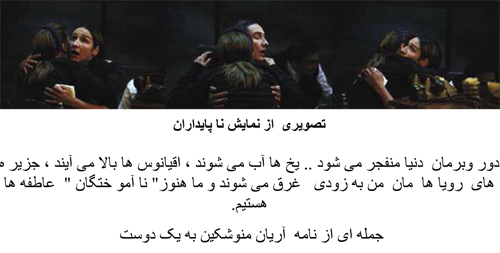
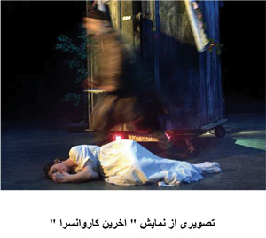
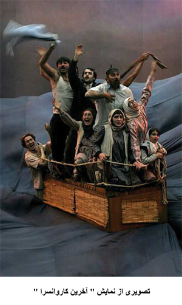

|
|

آريان منوشکين هنرمند نامدار فرانسوی از جنبش يک ميليون امضا حمايت می کند
دو شنبه20 فروردین 1386
آريان منوشکين گارگردانی نامدار و بنيان گذار تئاتر سولی " آفتاب" يکی از مراکز معتبر خلاقيت هنری در فرانسه است .او با جست و جوئی خستگی ناپذير همواره در صدد پيوند هنر با انديشه ها و کنش های آزادي خوا هانه و حق طلبانه بوده و هست . در تئاتر آفتاب ، آريان منوشکين ، در کنار اجرا های تازه ای از آثار شکسپير و مولير نمايش هائی از نويسندگان معاصر نظير هلن سيکسوس و آرنولد وسکر را به صحنه برده . نمايشنامه های اخير او " آخرين کاروان سرا" حديث رنجبار زندگی آوارگان و تبعيديان و " نا پايداران " که تلاقی سرگذشت ها ئی است برای بيان زندگی ، رابطه ها، عشق ها ، غم و رنج ها در فاصله ی مرگ و جدائی ، با اقبال بسيار تما شاگران روبرو شده . مضمون تازه و اجرای بديع اين نمايش ها توجه و تحسين زيادی برانگيخته است.
حرفهای اين هنرمند برجسته را در گفت و گو با شهلا شفيق می خوانيم.
من زنانی را که در شرايط دشوار برمی خيزند و نه می گويند ستايش می کنم. زنانی که در ايران ، در الجزاير ، در افغانستان و در باقی مناطق جهان جسم و جان خود را برای دفاع از آنچه نزد ما بد يهی می نمايد در معرض خطر قرار می دهند بی حد تحسين می کنم. امضای من برای حمايت از اين جنبش ، در مقايسه با آنچه آنان به انجام می رسانند کاری ناچيز است . در عين حال مايلم آمادگی خود را برای هر جور کنش همبستگی با اين جنبش اعلام کنم. همچنان که در اين جا هم چنين می کنم . من در کشوری زندگی می کنم که در آن برابری حقوق زنان به رسميت شناخته شده است اما به انجام رساندن آن به لحاظ اجتماعی و فرهنگی هنوز کامل نيست . ولی به پيش خواهيم رفت.
برای من دمکراسی ، حقوق بشر ، آزادی زنان ، برابری زن ومرد ، آزادی مذهب و عقايد و نيز حق بی اعتقادی ، ارزش هائی جهان شمولاند و پايمال کردن آن ها در هر جای جهان مرا به طغيان بر می انگيزد. رسوخ و رواج گرايشات بنياد گرا در جامعه فرانسه مرا به هراس می اندازد و خشمگينم می کند. می دانم که در اين ميان حتی رجوع به دمکراسی هم می تواند ابزار ی برای نفی دمکراسی شود . آنچنان که تارتوف می کرد. من اين کنش تارتوفی را رد می کنم و به همين دليل می گويم که ارزش های جهان روا غير قابل تقليل هستند و نبايد از آن ها صرف نظر کرد . بايد ديد گاههای کهنه و فرسوده را به دور انداخت . همين.

 